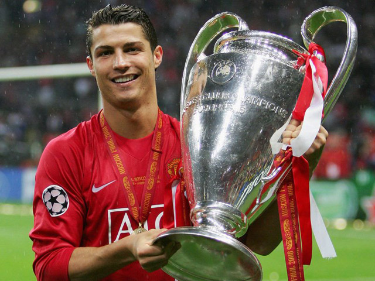

Carrer

"There have been a few players described as ‘the new George Best’ over the years, but this is the first time it's been a compliment to me."
— Former Manchester United player George Best on the 18-year-old Ronaldo in 2003.
Ronaldo became Manchester United's first-ever Portuguese player when he signed for £12.24 million before the 2003–04 season.[35] He was given the number 7 shirt by Alex Ferguson,[36] who said that after a friendly with Sporting, United's players "talked about him constantly, and on the plane back from the game they urged me to sign him" and that "he is one of the most exciting young players I've ever seen".[37][38] Ronaldo later revealed that he had requested the number 28 (his number at Sporting), as he did not want the pressure of living up to the expectation linked to the number 7 shirt, which had previously been worn by United legends such as George Best, Bryan Robson, Eric Cantona and David Beckham.[39] "After I joined, the manager asked me what number I'd like. I said 28. But Ferguson said 'No, you're going to have No. 7,' and the famous shirt was an extra source of motivation. I was forced to live up to such an honour".
STATS
2003–2009 Manchester United 196 (84)